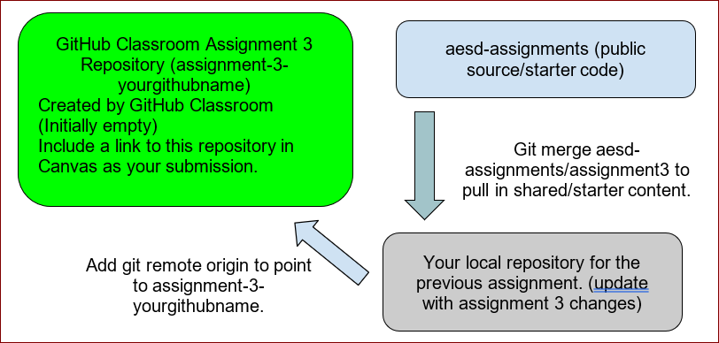

Use the same repository as assignment-3-part-1.
For this assignment, start with the git repo created for the previous assignment-3-part-1.
Use these commands in git bash to prepare your assignment repository:
git merge assignments-base/assignment3-part-2
Merge the assignment 3 starter code from the assignment3 branch of the aes0d-assignments repository into your master branch
git submodule update --init --recursive
Update automated testing source
git push origin main
This pushes your main branch, including previous assignment source and content merged from assignments-base to your working repository for this assignment.

Module 2 Content
Note: The following links are external and will open in a new tab.
No need to setup Github actions explicitely as this part is done in assignment-3-part-1.
Implementation:
Update a BASH script “finder-app/manual-linux.sh” which uses ARM cross-compile toolchain to build a barebones kernel and rootfs and boots using QEMU by completing the TODO references. Your manual-linux.sh script should do the following:
a. Take a single argument outdir which is the location on the filesystem where the output files should be placed. Replace all references to “outdir” in the remainder of the assignment with the absolute path to this directory.
i. If not specified, your script should use /tmp/aeld as outdir
b. Create a directory outdir if it doesn’t exist. Fail if the directory could not be created.
c. Build a kernel image using instructions in Module 2 lecture series. Note that you may need a few additional packages on your build host to complete the linux build. For the full and latest list of packages needed you may refer to the Dockerfile used to build the automated test container in https://github.com/cu-ecen-aeld/aesd-autotest-docker/blob/master/docker/Dockerfile
i. Use git to clone the linux kernel source tree if it doesn’t exist in outdir. Checkout the tag specified in the manual-linux.sh script
1. Use https://git.kernel.org/pub/scm/linux/kernel/git/stable/linux.git for the linux kernel source directory.
1.a. Use the `--depth 1` command line argument with git if you’d like to minimize download time
2. You may alternatively download and unzip from the corresponding kernel version tarball obtained from https://mirrors.edge.kernel.org/pub/linux/kernel (useful for slow Internet connections).
d. Copy resulting files generated in step 1.c to outdir.
e. Your script should build a root filesystem in outdir/rootfs as described in the Module 2 content, performing all of these operations in an automated fashion and completing the TODO items in the “finder-app/manual-linux.sh” script. The end result should be a outdir/Image kernel image and outdir/initramfs.cpio.gz file based on the content of a staging directory tree.
i. Skip the modules_install step discussed in the video content. The modules generated with the default kernel build are too large to fit in the initramfs with default memory. Alternatively you can increase the -m argument in the start qemu scripts to a value large enough to fit (currently must be >512m). You don't need modules for the simple example we use in assignment 3.
ii. Your writer application from Assignment 2 should be cross compiled and placed in the outdir/rootfs/home directory for execution on target.
f. Copy your finder.sh, conf/username.txt, conf/assignment.txt and finder-test.sh scripts from Assignment 2 into the outdir/rootfs/home directory.
i. Modify the finder-test.sh script to reference conf/assignment.txt instead of ../conf/assignment.txt.
g. Copy the autorun-qemu.sh script into the outdir/rootfs/home directory
h. Create a standalone initramfs and outdir/initramfs.cpio.gz file based on the contents of the staging directory tree.
2. Use the provided script “start-qemu-terminal.sh” to start qemu using the kernel,and initramfs files in outdir based on the passed argument. Use the provided script “start-qemu-app.sh” to start your application on the target.
3. Tag your repository assignment-3-part-2 using https://github.com/cu-ecen-aeld/aesd-assignments/wiki/Tagging-a-Release
Your manual-linux.sh script should completely build or rebuild all components in a new directory/existing directory outdir with the installed kernel. It should not require or use interactive content from the user other than the outdir command line argument when run the first time on a new outdir. It will be graded by an automated script with no manual interaction.
a. Interactive sudo input is allowed for root operations
2. You should be able to run ./start-qemu-terminal.sh to start a QEMU instance on the build directory.
3. After booting, you should be able to login with no username and password and then run ./finder-test.sh from your QEMU console prompt, getting a success response.
a. Your writer application should run successfully (after being cross compiled successfully) inside QEMU.
4. You should submit your modified manual-linux.sh script and any necessary scripts called from it in your assignment repository.
5. The ./full-test.sh script should run with success, validating implementation in systemcalls.c unit tests code as well as the manual-linux.sh script content and qemu operation.
6. Your github actions automated test script should pass on your repository and the “Actions” tab should show a successful run on your last commit.
This happens when building with old linux kernel source before https://github.com/cu-ecen-aeld/aesd-assignments/commit/21f5f747b806cd6f6b2a74fb07085a5f95e53405 was merged. Please update to a more recent kernel version, `v5.15.163` or later.
Using course discussion forums, ask students who have completed a successful boot to share their initramfs file with you. Verify boot of their initramfs works with your qemu setup to verify your kernel and qemu setup is correct. Compare their file with yours and look for differences to help isolate the problem with boot.
Issue: finder.sh not found
You may notice a confusing error message "finder.sh not found" if your finder.sh script references /bin/bash in your shebang portion of your script. This happens because /bin/bash isn't included in your simple busybox rootfs. The simplest option to resolve is to use /bin/sh in your shebang line of your finder.sh script (and remove any bash specific components in your script not supported by /bin/sh. Alternatively, you can modify busybox configuration to add /bin/bash to your root filesystem.
Issue: Kernel panic - not syncing: VFS: Unable to mount root fs on unknown-block(0,0)
Suspect an issue with your .cpio file creation. Search for commands you can use to extract the .cpio file and extract contents. Make sure the .cpio file is created at the root directory of the target filesystem (not the root directory of the host filesystem, or any other directory on the host filesystem). See the example cpio command from the Linux Root Filesystems lecture content and video.